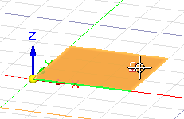
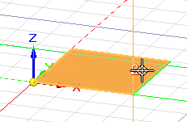
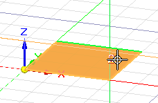
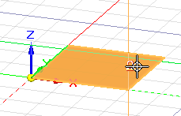

Change the sketch plane X-axis orientation
When any 2D drawing command is active, you can use different keyboard shortcuts to align the sketch plane X-axis orientation relative to the linear edges of a model face where you want to sketch. This ensures that horizontal and vertical constraints are parallel and perpendicular to the X-axis of the current sketch plane.
-
Choose a 2D drawing command.
-
Highlight a base coordinate system plane, planar face, or reference plane.
The default orientation of the sketch plane X-axis is shown as a green-highlighted line or edge.
Example:This is the default X-axis orientation of this base coordinate plane.

-
Change the sketch plane X-axis orientation by doing any of the following:
-
Press the N key to move the green line counterclockwise to the next linear edge along the outside of the plane or face.
Example:Each time you press N, the line moves counterclockwise to the next edge in sequence.



-
Press the B key to move the green line in a clockwise direction to the previous linear edge.
Each time you press B, the green line moves to the previous edge in sequence.
-
If there are no linear edges, you can press the P key to align the origin with the model base coordinate system orientation. This is the orientation of the triad at the center of the graphics window.
-
-
Press F3 or click the lock symbol to lock the sketch plane.
The red and green lines of the sketch plane origin axis are aligned with the orientation you selected.
-
Follow the prompts displayed in PromptBar to begin drawing.
To change the horizontal and vertical alignment of the X-axis for dimensioning, use the Reposition Origin command. See Set sketch plane horizontal and vertical orientation for dimensioning.